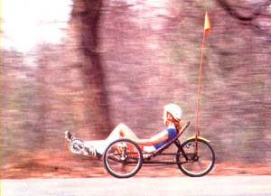
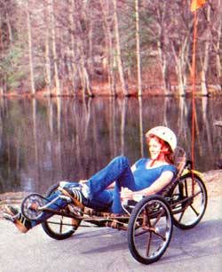
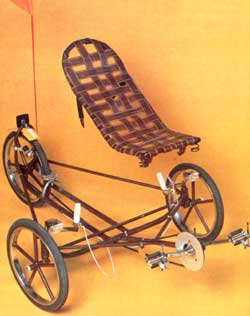
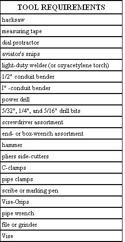
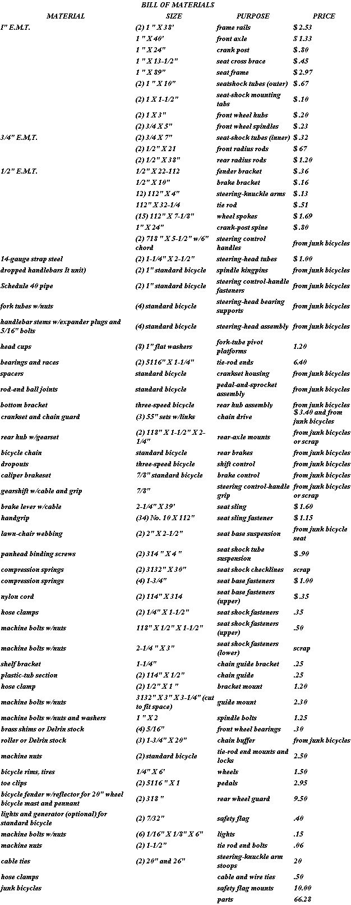

Cut-Rate Recumbent Bike
If you enjoy riding a bicycle for exercise and recreation, you may fall in love with this laid-back, three-wheeled style.
By The Mother Earth News editors
May/June 1983
Although the common bicycle is - as we've noted before - an efficient form of transportation, it's not above improvement. In fact, over the course of its history, enthusiasts have often altered the typical two-wheeler to suit their varied needs ... and the results have run the gamut from rider-supine speedsters to environmentally sound service carts.
Now few would deny that the reclining-seat racers - or "recumbents", as they're referred to in cycling circles - are the most exciting of the lot. You see, because the design allows the rider to rest in a lying-back position (thus being supported at the lumbar and pelvic regions), he or she has something to push against, and is able to develop a great deal more pedal pressure than would be possible when sitting on a more conventional saddle and relying on body weight alone. In addition, the low seating position lessens wind resistance (increasing the vehicle's top speed) and furnishes a comfortable platform upon which the cyclist can relax and breathe fully, without the restriction that results from being bent at the torso.
Understandably enough, though, the cost of such specialty vehicles is high ($1,000 and up), simply because they're individually built and usually contain light, strong (and expensive) materials. Nonetheless, the concept is a good one ... so Mother Earth News' research staff decided to cut a few corners and design an affordable recumbent bike that could be put together using a combination of standard bicycle parts and commonly available electrical metallic tubing (E.M.T.).
We're certainly not claiming that our chariot can compare with the exotic chrome moly-and-aluminum units now on the market. But we do feel that anyone who's willing to spend a weekend's worth of time, and perhaps $65 or so, will be rewarded with a sturdy little sport trike that'll do anything most ordinary bicycles will do, and may even be a heck of a lot more fun, besides.
Consider, too, that we put a good deal of thought into the design of this pedal recliner, and it's got some features worth keeping in mind. For example, the seat is not only light in weight (by virtue of its lawn-chair webbing), but also happens to be sprung front and rear to enhance rider comfort. Equally important, that sling is positioned in such a way that it distributes loads just about equally on all the trike's wheels, and the track-to-wheelbase relationship enables the machine, to maneuver tightly at speed, yet still remain quite stable.
And that's not all: We've also engineered steering geometry so that the front wheels self-center ... utilized a three-speed hub to improve hill climbing and acceleration ... and added a set of caliper brakes to stop the wheel. (The wheels, by the way, are made from discarded 20" rims spoked with sections of E.M.T., and should be able to take greater side loads than ordinary spoked wheels would probably be capable of handling.)
Finally, we went ahead and added extras - like headlights, a rear fender, toe clips, and safety flag - to make the three-wheeler practical well as enjoyable.
Click here to see complete materials list.
The Frame-up
We'll admit it ... at first glance, the recumbent looks like a pretty complicated workshop project. But if you study the "exploded" photograph, you'll see that the bike's chassis simply consists of two parallel frame rails - and a crank post - fastened to a dropped front axle ... and that these main components are held in check with wishbone radius rods, fore and aft. An antiflex hoop, affixed to the free ends of the frame rails, also serves as a fender and generator mount ... and a similar support - welded just forward of the rear tire - provides a solid point at which to attach the brake caliper.
The seat - merely a tubular frame that's crisscrossed with plastic webbing - is clamped to the front axle through a pair of 2" X 2 1/2" coil springs, and is supported at the rear by a set of telescoping shocks that are bolted to the frame rails (see the construction detail we've provided).
In order to assemble a recumbent bicycle of your own, you're going to need the tools and materials called for in our lists, plus a flat table or workbench upon which you can clamp the tubular parts while welding the frame. Keep in mind that you can hold costs to a minimum by scrounging - perhaps by salvaging from trash - bike frames and parts of various sizes, since many of the components used in our design were taken from junked 20" and 26" models.
Since the chassis is the base upon which all the other parts are mounted, it's important that you build it as accurately as possible. Start by bending your two frame rails (see our specifications) to create the rear "kick-ups" shown in the illustration. (A 1"- conduit bender will cost you about $35 ... but you might be able to borrow one from a local electrical contractor in order to make the several necessary arcs.) Then form the 40 degree front-axle drops, and set aside the four radius rods, the crank post, and the two 1 1/4" X 2 1/2" pipe steering-head tubes.
The angles in the front axle are critical to the bike's handling, so that assembly's left and right sides must be symmetrical. To achieve an accurate match, you'll need to cut contours in the ends of the axle tube with your aviator's snips - and verify the results with a dial protractor - to assure that the head tubes meet the axle at the required seven degree axis inclination and 12 degree positive caster. (When making your final measurements prior to welding, the axle tube should be clamped so the drops are perpendicular to the table you're working on.)
Once the axle assembly is fused together, contour the forward end of each frame rail (those twin tubes should first be temporarily clamped against two 3 7/8"-wide spacer blocks ... with the kickups parallel and pointing up) and join the pair to the center rear of the dropped tube. With this done, trim one end of the crank post, and weld that support to the front of the axle so it's raised 25 degrees from level (or is 10 inches off the table at its forward end).
After completing these steps, cut - and then fit - the radius rods in such a way that the front pair stretch between the crank post and the head tubes, and the rear set join the forward tips of the frame-rail kickups to the back of those same steering heads.
To make the two hoops at the rear of the chassis, merely bend your 1/2" E.M.T. to form two 4 1/4" and two 10 1/2" legs, all with 40 degree arcs ... then join each set together, using 1 1/2" lengths of the same conduit. The fender bracket is welded into the openings at the ends of the frame rails, after which the small hoop should be fastened to the upper surface of the rails, at a point 10 inches forward of the larger support. Finally, weld the dropouts (the flat plates that hold the rear axle in place) to the lower surface of the rail kickups ... positioning them 4 3/8 inches apart and flush with the ends of the rails.
At this point, complete the chassis itself by mounting the bottom bracket (the housing for the pedal-and-crank assembly) to the crank post. To do so, first determine whether that support is the proper length by "trying the frame on for size". If you (or the intended rider) have a problem reaching what would be full pedal extension when sitting on the frame rails at a point nine inches behind the axle, you'll have to Cut the crank post to size. You can also extend that stanchion slightly, if necessary.
(To protect the crank post against excessive flex, use the 14-gauge X 1" X 24" strap-steel section as an internal spine, by first cutting it to the same length as the support, then drilling a series of' 1/4" holes - about 4 inches apart and perpendicular to the axle - right through the tubular stanchion. When the strap is slipped down the center of the tube and its edges are welded to the walls at each opening, the post will better resist bending under leg pressure.)
The bottom bracket should be cut from one of your bike frames, and the rough edges should be ground flush to the housing. Then it can be welded squarely to the end of the crank post to support the pedal-and-crank assembly.
Make Do With Junk
The remaining components - except the seat - are nothing more than standard bike parts ... either used as is or modified. To make the seat's frame, you'll have to bend a 45 degree angle in your 89" length of 1" E.M.T., starting at a point 9 inches from one end ... measure 16 inches from the completion of that arc ... make another angle, this one at 20° . . . and then immediately form a half circle perpendicular to the plane of the two angles you've just bent. The opposite side of the frame, of course, merely duplicates the first ... and when the whole affair looks even, you can weld the 13 1/2" cross brace between the two ends. (Also, you might take this opportunity to tack on the two tabs, which will later hold the seat shocks, just below the 180 degree curve.)
To fasten the webbing (do so after painting the seat frame), just drill a series of 5/32" holes, at intervals of about 3 1/2 inches, into the underside of the conduit, then cut your strap (you'll need eleven pieces that are each 23" long, four sections of 48" each, and two more 10" long). Fold the ends of each band over several times before locking them in place with the mounting screws (make sure the webbing is stretched fully), and take care that the vertical straps are laced through the horizontal ones. (Note, too, that the two 10" belts should be attached to the same screws that hold the edge webbing to the cross brace. These straps will eventually be fastened to the front axle and will keep the seat in check.)
Now, all that's left is to make a few final parts and put the machine together! The 3/4" X 5" E.M.T. spindles, with their 1/2"-nut inserts (the conduit can be replaced with 1/2" Schedule 40 pipe if you wish), are welded to your bicycle fork tubes - each at a 97 degree angle - and the steering knuckle arms are similarly fastened to the spindles at 112 degrees ... as shown in our illustration. While these joints are cooling, you can cut the center knuckle from your set of dropped handlebars, trim an inch or so from each of the "hook" ends, and drill a 5/16" hole through the side of each curve, close to the tip. Then weld one scrounged handlebar stem to each modified bar, directly in line with the 5/16" hole, and parallel - but opposed - to the straight handle. (You can also slip a stem bolt through each assembly - and a headlight bracket if you're using lamps - and thread the expander plugs loosely in place at this time.)
Next, tap a set of head cups into each head tube, and install the fork tubes and bearings as you would in a normal bicycle. Once these are tightened down, go ahead and slip the handlebar assemblies into the fork tubes, line them up, and sock home the stem bolts.
To save a lot of trouble later, you'll probably want to paint your recumbent's frame now ... and while that finish is drying, you can assemble the E.M.T. "mag" wheels. The front units are made by welding 1" X 3" conduit hubs to the 20" rims with 7 1/8" sections of 1/2" E.M.T. (A plywood jig table, with a 1 3/16" hole drilled in its center, and bolts or dowels set to hold the rim true, should guarantee perfect results every time ... especially if you use spacers to lift the spokes and/or the rim to the necessary height.) The rear wheel is of a similar construction, but the spokes are slightly shorter (because the hub is bigger), and you should remove the gearset before doing an), heavy welding.
Your choice of front wheel bearings will be determined by the use to which you plan to put the recumbent. If the trike is to be simply a child's toy, some brass sheet stock can be cut, formed, greased, and then slipped between the hubs and the spindles. For a more sophisticated approach, Delrin (a composite material available through industrial supply houses) rod can be cut and filed - or machined - to serve the same purpose, and has the added benefit of' natural lubricity. Either way, the wheels will be held to their spindles with 1/2" bolts and washers.
A 32 1/4" tie rod connects the two steering knuckle arms ... but, since the machine's toe-in must be adjustable, we've welded a 5/16" nut into each end of the 112" linking tube and threaded in a pair of rod-end ball joints with locking nuts. These are - in turn - fastened to the flattened ends of the arms with 5/16" X 1" bolts. (Once you've set the toe-in at 1/8", you can weld machine-nut stops to the rear of the axle tube to keep the knuckle arms from traveling too far and allowing the tires to rub the frame.)
Finish Up and Fly
At this point, you should be ready to install the crank assembly, the rear wheel, the brake caliper and hand lever, both handgrips, the rear fender, the flag, and the reflector ... and the generator, if you're using lights. Keep in mind that when you run the control cables for the brake and shifter, you'll have to ascertain where - as determined by the length of cable you're using - to weld the 7/32" nuts that will hold the plastic housing ends in place.
The chain (which is actually three 55" lengths of standard bike links clipped together) has to make one angle in its travels. To alleviate friction at that point beneath the front axle, we again used a block of Delrin composite as a buffer. An alternative, though, would be to install a spool, a roller, or a pair of sewing bobbins at that location, and allow the links to ride on this "wheel." Also, to prevent the chain from wandering sideways, we made up a small guide consisting of a 2 1/4" X 3 plastic tongue bolted to a small bracket), which clamps to the right front radius rod and can be adjusted as necessary. Note, too, that we used a disk-type guard on the crank sprocket, though a conventional chain guard might be a better choice if children will be riding the machine.
Finally, now that everything's installed and adjusted, you can mount the sling seat. Our illustration shows how the rear shock tubes are put together, and once they're completed, you can bolt them between the seat tabs and the holes in the frame's side rails. The front coils me then simply clamped to the seat frame and the front axle, and the webbing checkstraps are secured - with screws - to that tubular member as well.
If you maintain your recumbent on a I regular basis and don't abuse it, you - or the person you've built it for - should enjoy a good deal of truly unconventional cycling and healthful exercise. Butt please do remember that the low-profile three-wheeler is more difficult to see than an ordinary bicycle even with its marking flag) and therefore should he ridden with more than just a thought toward safety.
|
 MOTHER EARTH NEWS Lay back and enjoy the ride. |
 MOTHER EARTH NEWS The sling position of the seat distibutes the riders load more evenly. |
 MOTHER EARTH NEWS The recombent bike is lightweight and streamlined for easy construction and use. |
 MOTHER EARTH NEWS Assembly diagram. |
 MOTHER EARTH NEWS Tool requirements. |
 MOTHER EARTH NEWS List of materials. Prices accurate in 1983. To enlarge list image, click on it once and then click on the next image once to enlarge a second time. If you'd like to print this list, download the PDF version of the Materials List, which you can find a link to in the article text. |